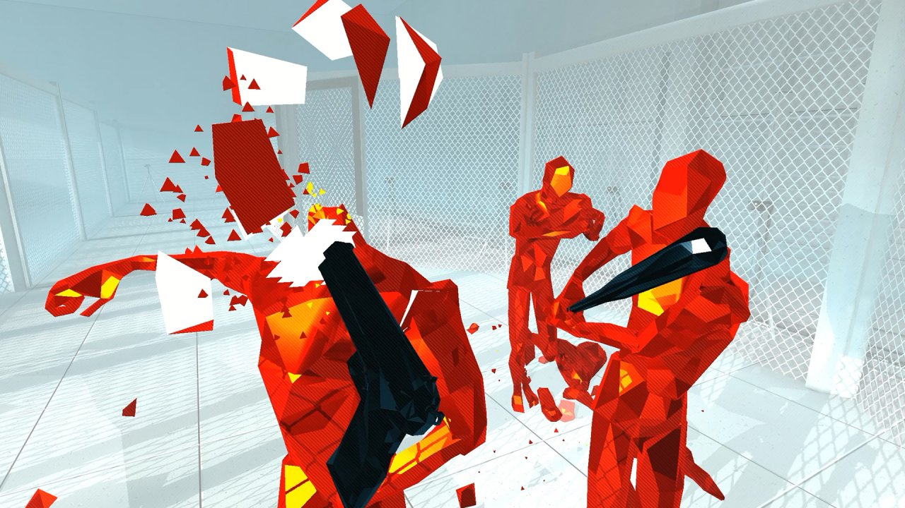
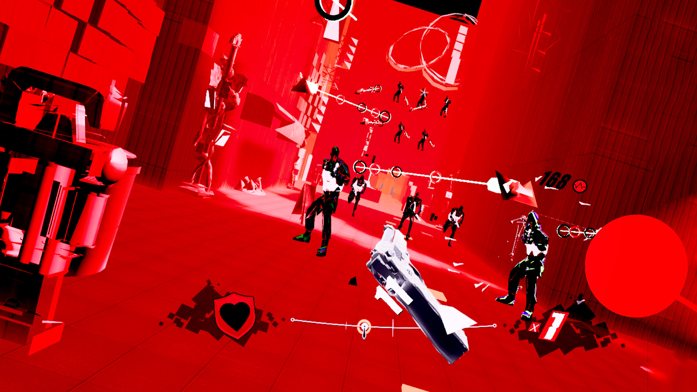

This is a list of my personal favourite top 3 games on the quest as of right now. I'll give a brief description of each game and why I like it. (Click the images to see a trailer of the corresponding game)
Superhot is a wave shooter where time only moves whenever you move. This gives you the ability to dodge bullets with ease and shoot even easier. If you want to feel like Neo from The Matrix, this game is for you.
Beat Saber is a classic for VR and probably THE most popular VR game out there. It's a rhythym game where you cut blocks flying at you to the music. The only thing keeping this from being my favourite game on the Quest is that there is no way to get custom songs so I am stuck with the default songs(which aren't recognizable).
My personal favourite game, Pistol Whip is an arcade shooter with a trace of a rhythym game in it. You move progressively through a scene shooting enemies and dodging their bullets to dubstep-like music. It provides challenge and is really satisfying. There are only 10 levels currently as the game has been out for only a few weeks, but it has alot of potential.
